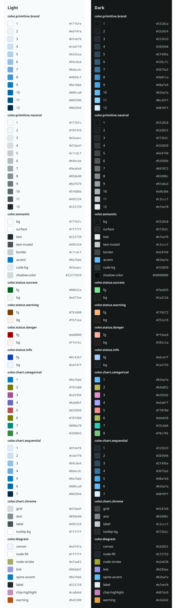

Every color below is a token: linked tokens.css + components.css, both modes. Toggle the theme top-right.
Body copy set in the sans stack at the base fluid step. Design tokens keep the type scale, spacing rhythm, and color roles in one source of truth.
Muted secondary text — used for captions and metadata.
Inline code uses the mono stack and the code-bg surface.
Surface, border, radius, and elevation shadow all come from tokens.
The recipe lives in components.css, built purely on the CSS vars.
Rendered from dist/diagram-palette.json values (dist-sourced), flips with the theme.
| Token group | Purpose | Modes |
|---|---|---|
| color.semantic | bg / surface / text / border | light + dark |
| color.status | success / warning / danger / info | light + dark |
| color.chart | categorical + sequential + chrome | light + dark |
